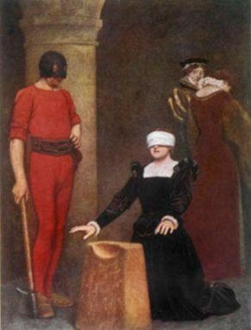

El fallido complot Babington, tuvo lugar en el año 1586 con la intención de matar a la reina Isabel I de Inglaterra y subir al trono a su prisionera María I de Escocia. En la conspiración participó el mismísimo rey Felipe II de España con la intención última de invadir Inglaterra.
El principal conspirador fue Anthony Babington. Su mala suerte, consistió en que envió una carta codificada mediante una mezcla de cifrado César con unos cuantos símbolos que representaban algunas palabras a la prisionera María I de Escocia que fue interceptada y descifrada por Thomas Phelippes.
Astutamente, no intervino sino que esperó a que María I respondiera con una nueva carta cifrada a la que éste añadió unas líneas (cifradas por él mismo) que decían: 'Me alegraría conocer los nombres y las cualidades de los seis caballeros que llegarán a cabo el plan; porque puede que, conociendo a los participantes, yo pueda daros algún consejo necesario para seguirlo en eso, así como de vez en cuando los particulares de cómo proceder: y en cuanto podáis, con el mismo propósito, quiénes conocen ya, y en qué medida los detalles de esta cuestión'.
Babington cayó en la trampa y finalmente significaría la ejecución de María I y el fracaso del propio Felipe II (que posteriormente, desarrollaría el también fracasado plan de la Armada Invencible.
